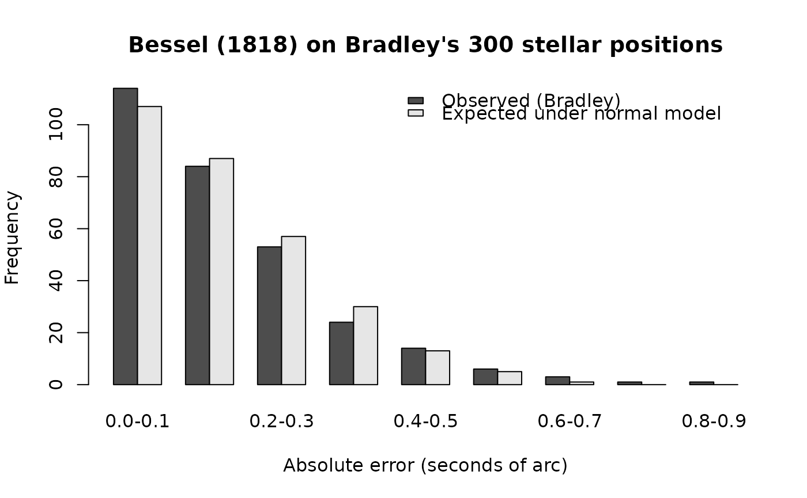

Bessel's (1818) Grouped Frequency Distribution of Bradley's Astronomical Observation Errors
Source:R/data_bessel_errors.R
bessel_errors.RdThe nine-bin grouped frequency distribution that Friedrich Wilhelm Bessel published in 1818 for the absolute errors of 300 stellar position observations made by British Astronomer Royal James Bradley at the Greenwich Observatory between 1750 and 1762. Bessel compared the empirical distribution of these errors to the normal distribution, providing one of the early empirical demonstrations that observational errors are approximately normally distributed, a position Gauss had developed on theoretical grounds a decade earlier. The data are reproduced from Maxwell, Delaney, and Kelley (2027, Designing Experiments and Analyzing Data: A Model Comparison Perspective, 4th ed., Routledge), Table 1.4.
Format
A data frame with 9 observations on 6 variables, one row per bin of the grouped frequency distribution. The error magnitudes are in seconds of arc.
binInteger bin index, 1 through 9.
lowerLower edge of the bin (inclusive), in seconds of arc.
upperUpper edge of the bin (exclusive), in seconds of arc.
midpointBin midpoint,
(lower + upper) / 2, in seconds of arc. The conventional plug-in value when approximating moments from a grouped frequency distribution.observedEmpirical frequency: the number of Bradley's 300 absolute errors that fell in the bin.
expectedExpected frequency under a normal distribution with mean 0 and standard deviation approximately 0.2 seconds of arc. These are Bessel's own normal-model expectations as reproduced in Maxwell, Delaney, and Kelley (2027). Both the observed and expected columns sum to 300.
Source
Bessel, F. W. (1818). Fundamenta astronomiae pro anno MDCCLV deducta ex observationibus viri incomparabilis James Bradley in specula astronomica Grenovicensi per annos 1750–1762 institutis [Foundations of astronomy for the year 1755, deduced from the observations of the incomparable man James Bradley at the Greenwich astronomical observatory during 1750–1762]. Friedrich Nicolovius.
Reproduced in Maxwell, Delaney, and Kelley (2027), Table 1.4.
Details
This data set ships in the original grouped form Bessel reported. The 300 individual error values are not available; what Bessel published, and what is reproduced here, is the 9-bin frequency distribution. Computations that require the underlying continuous values must either be approximated from the bin midpoints (the usual weighted-moments approach, illustrated in the examples) or estimated parametrically by assuming a distributional form within each bin.
Historical context. Friedrich Wilhelm Bessel
(1784–1846) was a German astronomer and mathematician best
known to statisticians for the Bessel correction
(n - 1 in the unbiased variance estimator) and the
Bessel functions. The 1818 monograph that contains this
frequency distribution is part of a much larger effort to
produce a reference catalog of stellar positions, the
Fundamenta astronomiae, derived from the observations of
James Bradley (1693–1762), the third Astronomer Royal of
Britain and a pioneering observational astronomer. Bradley's
position measurements were the most accurate of his era; the
observational errors are small (most under 0.5 seconds of arc)
and approximately normally distributed.
Why this data set matters for measurement and analysis. Bessel's 1818 comparison is one of the earliest empirical demonstrations that observational error is approximately normal, complementing the theoretical case Gauss had made on independent grounds. It is also a clean worked example for the approximation of moments from grouped frequency data when only binned counts (rather than individual observations) are available, a common situation in published reports.
Approximating moments from grouped data. When the underlying continuous values are unavailable, the standard approach is to plug the bin midpoints in for the unknown individual values and form a weighted mean and weighted variance using the bin frequencies as weights. The frequency-weighted mean and variance are $$\bar{x}_w = \frac{\sum_k f_k m_k}{\sum_k f_k}, \qquad s^2_w = \frac{\sum_k f_k (m_k - \bar{x}_w)^2}{(\sum_k f_k) - 1}$$ where \(f_k\) is the bin frequency and \(m_k\) is the bin midpoint. The examples below compute both, on the observed frequencies and on Bessel's normal-model expected frequencies. The two are close, consistent with Bessel's conclusion that the empirical and theoretical distributions agree.
References
Bessel, F. W. (1818). Fundamenta astronomiae pro anno MDCCLV deducta ex observationibus viri incomparabilis James Bradley in specula astronomica Grenovicensi per annos 1750–1762 institutis. Friedrich Nicolovius.
Maxwell, S. E., Delaney, H. D., & Kelley, K. (2027). Designing experiments and analyzing data: A model comparison perspective (4th ed.). Routledge. (See Chapter 1, Section 1.4.5.2, on the historical and empirical basis for the normal distribution.)
Kelley, K. (2026). DMAR: Methods for the design, measurement, and analysis of human-centered outcomes in R [R package]. https://github.com/yelleKneK/DMAR
Stigler, S. M. (1986). The history of statistics: The measurement of uncertainty before 1900. Belknap Press of Harvard University Press. (See Chapter 5 on the development of the normal distribution and the role of astronomical errors.)
Examples
data(bessel_errors)
bessel_errors
#> bin lower upper midpoint observed expected
#> 1 1 0.0 0.1 0.05 114 107
#> 2 2 0.1 0.2 0.15 84 87
#> 3 3 0.2 0.3 0.25 53 57
#> 4 4 0.3 0.4 0.35 24 30
#> 5 5 0.4 0.5 0.45 14 13
#> 6 6 0.5 0.6 0.55 6 5
#> 7 7 0.6 0.7 0.65 3 1
#> 8 8 0.7 0.8 0.75 1 0
#> 9 9 0.8 0.9 0.85 1 0
# Total frequencies (each column should sum to 300).
colSums(bessel_errors[, c("observed", "expected")])
#> observed expected
#> 300 300
# Weighted mean of the absolute error, approximating the
# individual observations by the bin midpoints. Because every
# bin lower edge is at or above zero, this is the mean
# absolute error rather than the mean error itself.
wmean_obs <- with(bessel_errors,
sum(observed * midpoint) / sum(observed))
wmean_exp <- with(bessel_errors,
sum(expected * midpoint) / sum(expected))
c(observed = wmean_obs, expected_under_normal = wmean_exp)
#> observed expected_under_normal
#> 0.1770000 0.1746667
# Weighted variance and standard deviation of the absolute
# error, using bin midpoints as plug-in values for the
# individual observations.
wvar_obs <- with(bessel_errors,
sum(observed * (midpoint - wmean_obs)^2) /
(sum(observed) - 1))
c(weighted_variance = wvar_obs,
weighted_sd = sqrt(wvar_obs))
#> weighted_variance weighted_sd
#> 0.02084047 0.14436228
# Side-by-side bar plot of observed and expected counts.
# Bessel's normal-model expectation tracks the empirical
# distribution closely except in the long right tail, where
# Bradley's three largest errors (counts 3, 1, 1) exceed what
# the normal model predicts.
op <- par(mar = c(5, 4, 4, 2))
barplot(rbind(bessel_errors$observed, bessel_errors$expected),
beside = TRUE,
names.arg = sprintf("%.1f-%.1f",
bessel_errors$lower,
bessel_errors$upper),
legend.text = c("Observed (Bradley)",
"Expected under normal model"),
args.legend = list(x = "topright", bty = "n"),
xlab = "Absolute error (seconds of arc)",
ylab = "Frequency",
main = "Bessel (1818) on Bradley's 300 stellar positions")

par(op)